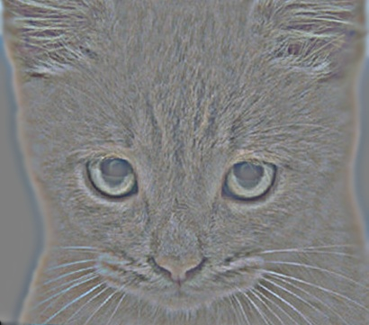
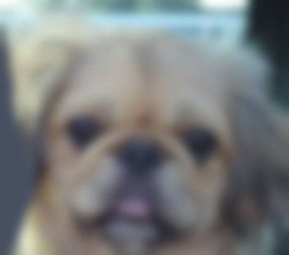
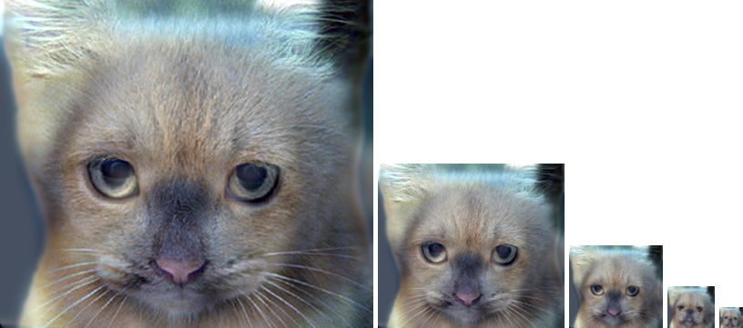
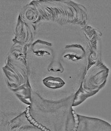
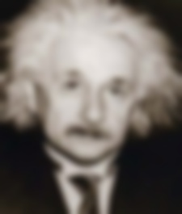
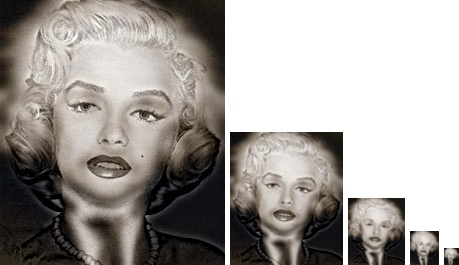

Image filtering algorithm is a built-in function in Matlab called imfilter(). This function basically returns a filtered image based on the given original image and the filter. In this project, I implement the image filtering algorithm with my own version of imfilter(). Then using the guassian filter given, we can obtain a low-pass filtered version of one image and a high-pass filtered version of another image. Combining these two images will gives us the so-called hybrid image. Hybrid image has the property that we percept the image differently when we are at different distance from the image. And my result will be shown at the end of the report.
Four steps are listed above to illustrate the process of the this project. One thing need to mention is that we pad the images using the reflected image content, which makes the result seems more natural. This is easily achieved by setting the method parameter in padarray() to be 'symmetric'.
To implement the image filtering algorithm, I simply loop over all pixels in the image matrix for all channels. This takes more time than the built-in imfilter() to filter the same image but the outcoming results are the same.
% my own version of imfilter()
function output = my_imfilter(image, filter)
imageH = size(image,1);
imageW = size(image,2);
channelNum = size(image,3);
filterH = size(filter,1);
filterW = size(filter,2);
padImage = padarray(image,[(filterH-1)/2,(filterW-1)/2],'symmetric','both');
filteredImage = zeros(imageH,imageW,channelNum);
for channel = 1:channelNum
for i = 1 : imageH
for j = 1 : imageW
box = padImage(i:i+filterH-1,j:j+filterW-1,channel);
filterBox = filter.*box;
filteredImage(i,j,channel) = sum(filterBox(:));
end
end
end
output = filteredImage;
|    |
The first image shows the high-pass version of a cat and the second one shows the low-pass version of a dog. The cutoff frequency is set to be 7 in this case. Then the following series of images are the hybrid images that combine the first two images, from large scale to small scale. The hybrid image turns from a cat into a dog when it becomes smaller and smaller.
|    |
The first image shows the high-pass version of Marilyn and the second one shows the low-pass version of Einstein. The cutoff frequency is set to be 4 in this case. Then the following series of images are the hybrid images that combine the first two images, from large scale to small scale. The hybrid image turns from Marilyn into Einstein when it becomes smaller and smaller.